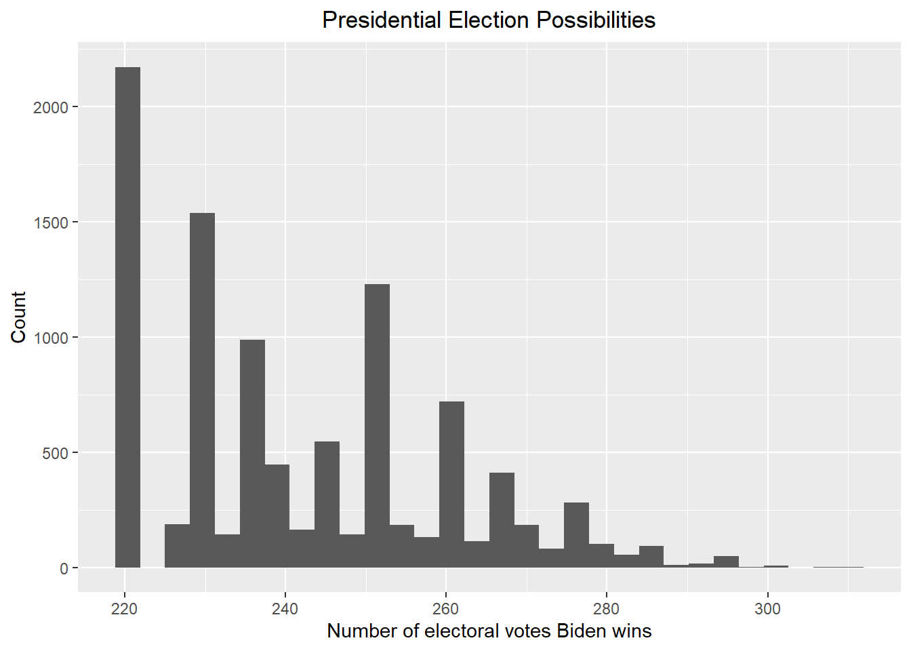
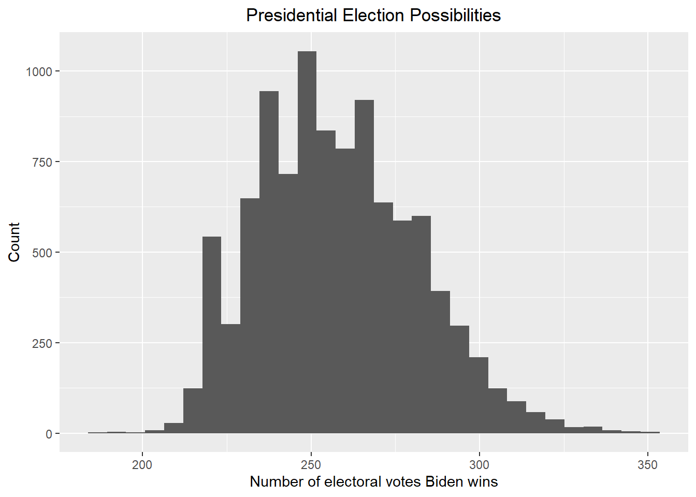
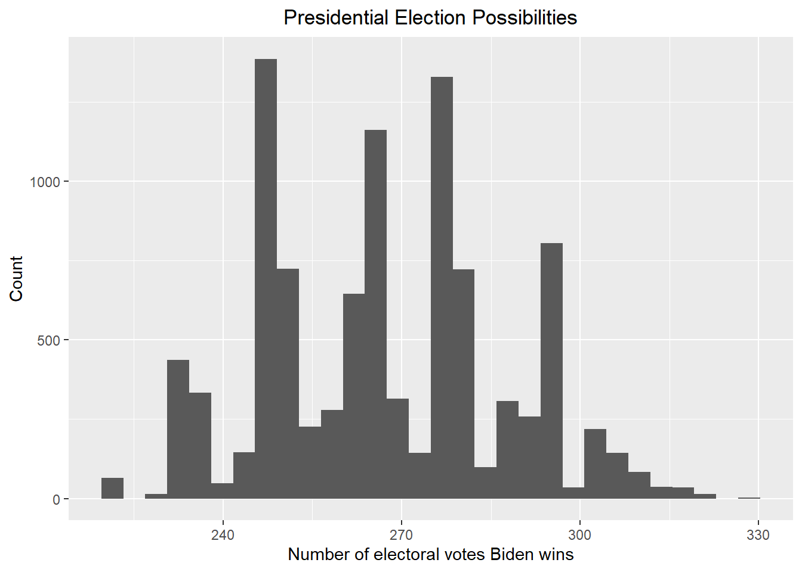
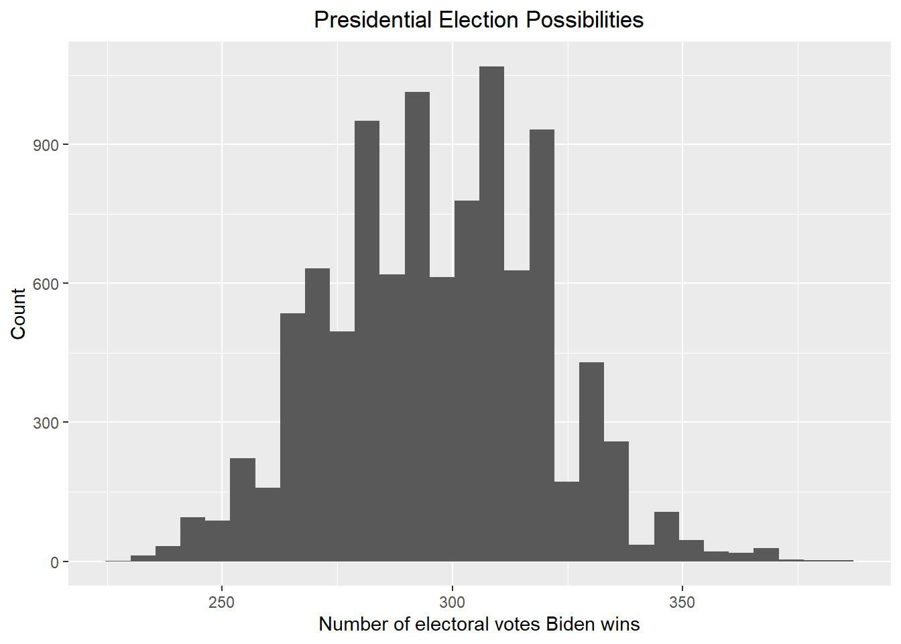
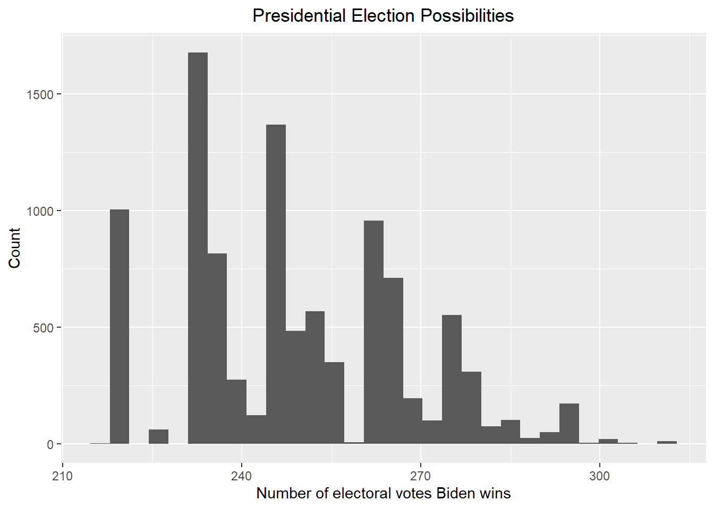
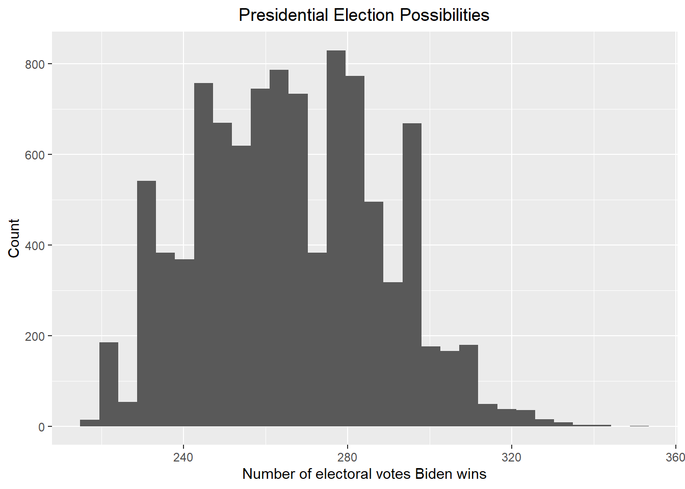

The data used was from FiveThirtyEight. The original data has the following major problems that makes data wrangling necessary.
Some polls in the data only aim at getting the general supporting rate of Biden and Trump and do not target a specific state, which is irrelevant of our question when the electoral votes of each state need to be estimated.
Although the majority of polls featuring the supporting rate of Biden and Trump, some polls show candidates besides Biden and Trump. Moreover, these candidates have very low supporting rate and should be unable to be elected as the next president. These candidates are thus unnecessary data that needs to be cleaned.
Some pollsters’ poll grade is too low to be counted as credible data.
Some columns in the data are not in an ideal data type (e.g. the “start_date” and “end_date” column), which makes filtering according to time difficult.
The polls shows the supporting rate of Biden and Trump in two separate rows instead of one row. Also, not all polls show the supporting rate of both Biden and Trump. These makes the calculation of the supporting rate difference difficult.
Some states have too few polls to conduct a meaningful Bayesian statistical analysis.
Apart from data wrangling, web scraping is also necessary for this project due to the following reasons.
Information about the electoral votes for each state is needed and the information is on a table of a website.
Information about the party affiliation of each state is needed and the information is on a table of a website.
As an illustration of the data wrangling process, below are the 2024 presidential election poll data before and after the data wrangling process.
The 2024 presidential election before the data wrangling process
## # A tibble: 1,171 × 42
## poll_id pollster_id pollster spons…¹ spons…² displ…³ polls…⁴ polls…⁵ fte_g…⁶
## <dbl> <dbl> <chr> <dbl> <chr> <chr> <dbl> <chr> <chr>
## 1 81695 1726 Premise NA <NA> Premise 709 Premise <NA>
## 2 81695 1726 Premise NA <NA> Premise 709 Premise <NA>
## 3 81695 1726 Premise NA <NA> Premise 709 Premise <NA>
## 4 81695 1726 Premise NA <NA> Premise 709 Premise <NA>
## 5 81694 1102 Emerson … NA <NA> Emerso… 88 Emerso… A-
## 6 81694 1102 Emerson … NA <NA> Emerso… 88 Emerso… A-
## 7 81694 1102 Emerson … NA <NA> Emerso… 88 Emerso… A-
## 8 81694 1102 Emerson … NA <NA> Emerso… 88 Emerso… A-
## 9 81694 1102 Emerson … NA <NA> Emerso… 88 Emerso… A-
## 10 81694 1102 Emerson … NA <NA> Emerso… 88 Emerso… A-
## # … with 1,161 more rows, 33 more variables: methodology <chr>, state <chr>,
## # start_date <chr>, end_date <chr>, sponsor_candidate_id <dbl>,
## # sponsor_candidate <chr>, sponsor_candidate_party <chr>, question_id <dbl>,
## # sample_size <dbl>, population <chr>, subpopulation <lgl>,
## # population_full <chr>, tracking <lgl>, created_at <chr>, notes <chr>,
## # url <chr>, source <dbl>, internal <lgl>, partisan <chr>, race_id <dbl>,
## # cycle <dbl>, office_type <chr>, seat_number <dbl>, seat_name <lgl>, …The 2024 presidential election after the data wrangling process
## # A tibble: 116 × 40
## poll_id pollster_id pollster spons…¹ spons…² displ…³ polls…⁴ polls…⁵ fte_g…⁶
## <dbl> <dbl> <chr> <dbl> <chr> <chr> <dbl> <chr> <chr>
## 1 81636 460 SurveyUSA 761 WNYT-TV Survey… 325 Survey… A
## 2 81625 1477 Targoz M… 1477 PollSm… Targoz… 454 Targoz… B/C
## 3 81625 1477 Targoz M… 1477 PollSm… Targoz… 454 Targoz… B/C
## 4 81626 1477 Targoz M… 1477 PollSm… Targoz… 454 Targoz… B/C
## 5 81626 1477 Targoz M… 1477 PollSm… Targoz… 454 Targoz… B/C
## 6 81627 1477 Targoz M… 1477 PollSm… Targoz… 454 Targoz… B/C
## 7 81627 1477 Targoz M… 1477 PollSm… Targoz… 454 Targoz… B/C
## 8 81628 1477 Targoz M… 1477 PollSm… Targoz… 454 Targoz… B/C
## 9 81628 1477 Targoz M… 1477 PollSm… Targoz… 454 Targoz… B/C
## 10 81544 1102 Emerson … NA <NA> Emerso… 88 Emerso… A-
## # … with 106 more rows, 31 more variables: methodology <chr>, state <chr>,
## # start_date <date>, end_date <date>, sponsor_candidate_id <dbl>,
## # sponsor_candidate <chr>, sponsor_candidate_party <chr>, question_id <dbl>,
## # sample_size <dbl>, population <chr>, subpopulation <lgl>,
## # population_full <chr>, tracking <lgl>, created_at <chr>, notes <chr>,
## # url <chr>, source <dbl>, internal <lgl>, partisan <chr>, race_id <dbl>,
## # cycle <dbl>, office_type <chr>, seat_number <dbl>, seat_name <lgl>, …The data wrangling process mainly did the following.
It clears all polls that do not target a specific state.
It clears all candidates that are not Biden or Trump.
It clears all pollsters with fte grade below C.
It uses the “lubridate” package to convert the date columns of the original data into the ideal data type.
It merges the rows of Biden and Trump of each polls into one row and creates a new column that shows the spread of the supporting rate between Biden and Trump.
It clears all rows that does not have both the supporting rate of Biden and Trump.
Besides, below were the electoral votes for each state and the party affiliation of each state table that I got after applying web scraping
The electoral votes for each state table
## # A tibble: 51 × 2
## state electoral_votes
## <chr> <dbl>
## 1 California 54
## 2 Texas 40
## 3 Florida 30
## 4 New York 28
## 5 Illinois 19
## 6 Pennsylvania 19
## 7 Ohio 17
## 8 Georgia 16
## 9 North Carolina 16
## 10 Michigan 15
## # … with 41 more rowsIn this table, each row shows a state and the electoral votes it has in the 2024 presidential election.
The party affiliation for each state table
## # A tibble: 51 × 5
## state Rep None Dem affiliation
## <chr> <chr> <chr> <chr> <chr>
## 1 Alabama 52% 13% 35% R
## 2 Alaska 39% 29% 32% R
## 3 Arizona 40% 21% 39% R
## 4 Arkansas 46% 16% 38% R
## 5 California 30% 21% 49% B
## 6 Colorado 41% 17% 42% B
## 7 Connecticut 32% 18% 50% B
## 8 Delaware 29% 17% 55% B
## 9 District of Columbia 11% 15% 73% B
## 10 Florida 37% 19% 44% B
## # … with 41 more rowsIn this table, each row shows a state and the party affiliation that the adults in the states consider themselves as, where the data under column “Rep” indicates the percentage that the adults in the states who consider themselves as Republicans, the data under column “None” indicates the percentage that the adults in the states who has no party affiliation, and the data under column “Dem” indicates the percentage that the adults in the states who consider themselves as Democrats. Here, I consider the state as a “Blue state” (“B” in the “affiliation” column) if it has more adults that think they are Democrat/lean Dem. and a “Red state” (“R” in the “affiliation” column) if it has more adults that think they are Republican/lean Rep. Otherwise, I label the state as a “White state” (“W” in the “affiliation” column) since it has no affiliation.
For the Bayesian statistical analysis part, I used the following priors.
Normal distribution with \(\mu = 0\) and \(\sigma = 0.04\) for all states.
Normal distribution with \(\mu\) equals the mean spread of the final month before the 2020 presidential election for each state and \(\sigma\) equals the standard deviation of spread from 2018 to 2020 for each state.
Normal distribution with \(\mu\) equals the mean of the current mean spread and the mean spread of the final month before the 2020 presidential election for each state and \(\sigma\) equals the standard deviation of spread from 2018 to 2020 for each state.
I chose the normal distribution since the election result is usually normally distributed. As for the parameters in the normal distribution, the first prior is a basic one based on no knowledge about the historical election. The second prior utilized the historical election information. I chose this prior mean since we want to predict the results that are close to the election day. I chose this standard deviation since the earliest poll data from FiveThirtyEight is since 2018 and I want the standard deviation to be relatively large to account for uncertainties since I am predicting the 2024 presidential election using the data in 2022 and a lot can happen during the next two years. The third prior utilized both the historical and the current presidential election information. I chose this new prior mean since for the last month of the 2020 election, people have seen Trump’s performance for the four years but they have not seen Biden’s performance. As a result, the polls will go against Trump and favor Biden. However, in the 2024 presidential election, people will see how Biden performed in the four years and the polls are more likely to go against Biden. So I assume that in 2024, people have seen both Biden and Trump’s performance during their presidency and their favor towards both candidates is mitigated, namely they do not favor strongly for either Biden or Trump. Based on this assumption, we can have the prior mean to be the mean of the current mean spread and the mean spread of the final month before the 2020 presidential election. The standard deviation for the new prior does not change since I still want the standard deviation to be relatively large to account for uncertainties.
For each prior mentioned above, the corresponding posterior was obtained by either including a bias term or not. The bias added follows the normal distribution with \(\mu = 0\) and \(\sigma = 0.03\) for all states. I chose the normal distribution since the bias is usually normally distributed. The mean of the bias is set to be 0 since I do not think the bias will go towards either party. The standard deviation of the bias is set to be 0.03 according to the textbook of this course. The purpose of adding the bias term is to account for the potential uncertainty of the election, making the results more similar to a normal distribution.
After the Bayesian statistical analysis, I used the Monte Carlo simulation to simulate the election results of the states based on each posterior mean and standard deviation corresponds to the prior I used. Since not all states are included in the Bayesian statistical analysis due to the lack of poll data, I used the state affiliation data for the states that are not included in the Bayesian statistical analysis and assumed that the blue states will still be in favor of Biden and the red states will still be in favor of Trump. Then I calculated the number of electoral votes that Biden will win by combining the simulated election results and the number of electoral votes in each state and plotted a histogram to show the results. The histogram showing the number of electoral votes that Biden will win for the 2024 presidential election is the following, accompanied by Biden’s winning rate and the 80% credible interval under these situations.
Prior 1, no bias

## [1] "Biden has about 8.75 % probability to win the 2024 presidential election. The corresponding 80% credible interval is [ 221 , 261 ]"Prior 1, with bias

## [1] "Biden has about 30.45 % probability to win the 2024 presidential election. The corresponding 80% credible interval is [ 227 , 285 ]"Prior 2, no bias

## [1] "Biden has about 44.96 % probability to win the 2024 presidential election. The corresponding 80% credible interval is [ 246 , 295 ]"Prior 2, with bias

## [1] "Biden has about 87.74 % probability to win the 2024 presidential election. The corresponding 80% credible interval is [ 265 , 322 ]"Prior 3, no bias

## [1] "Biden has about 15.42 % probability to win the 2024 presidential election. The corresponding 80% credible interval is [ 221 , 265 ]"Prior 3, with bias

## [1] "Biden has about 42.89 % probability to win the 2024 presidential election. The corresponding 80% credible interval is [ 231 , 287 ]"